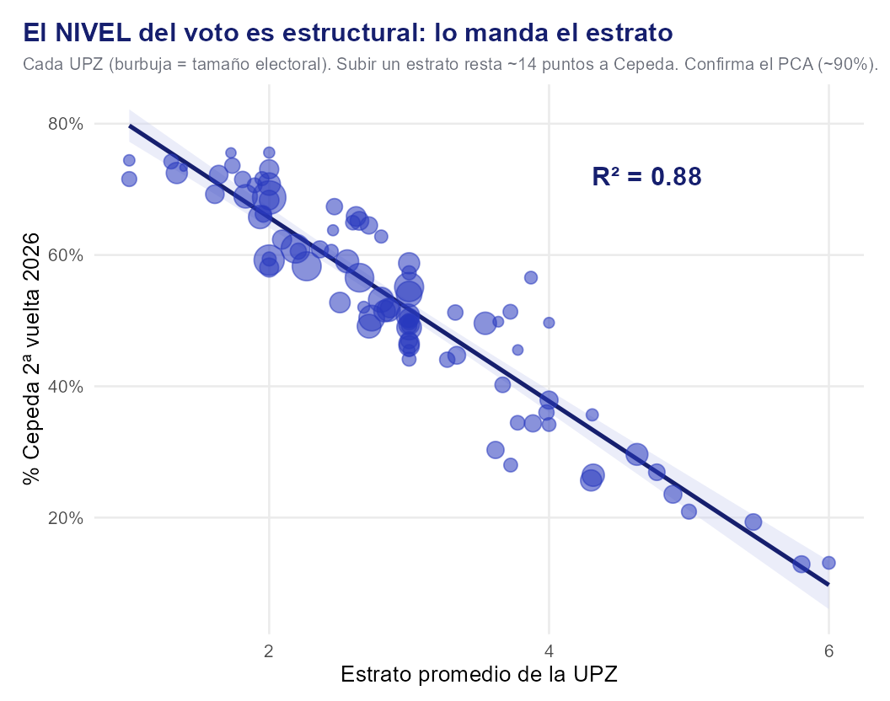
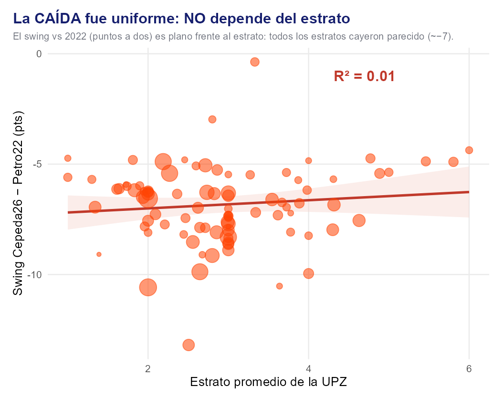
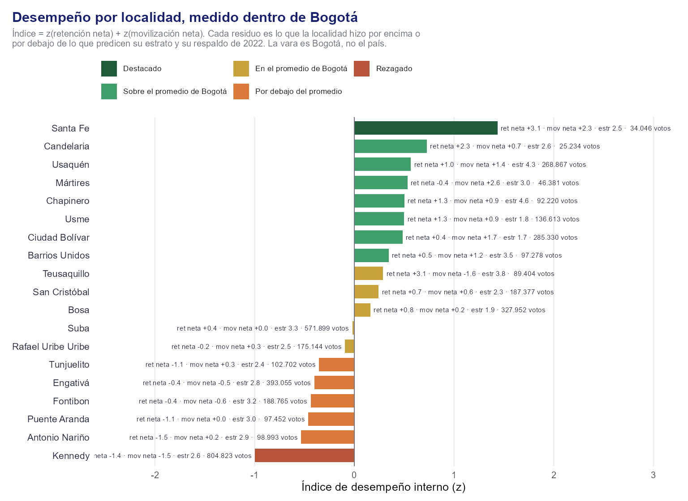
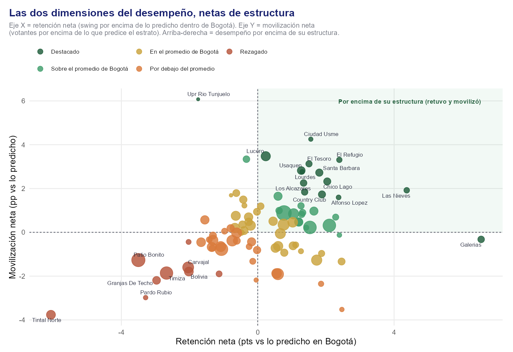
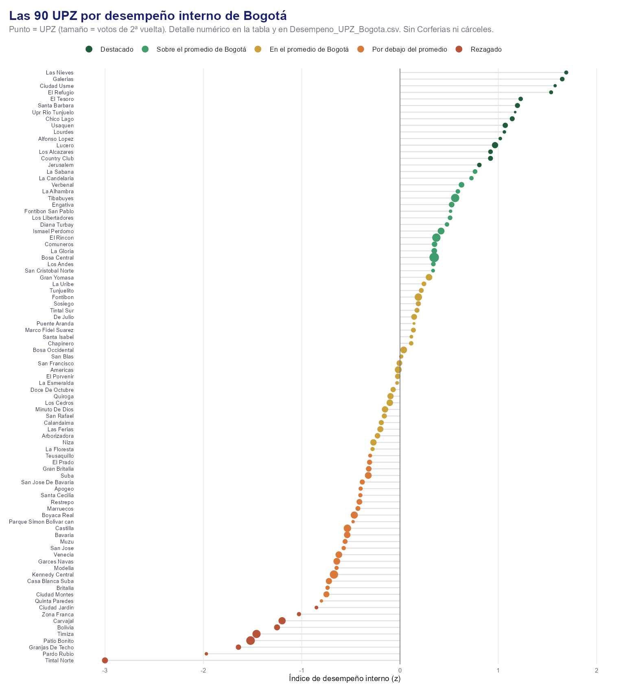
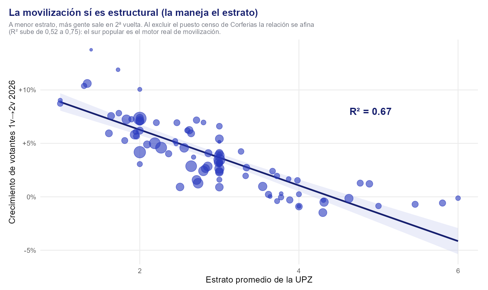
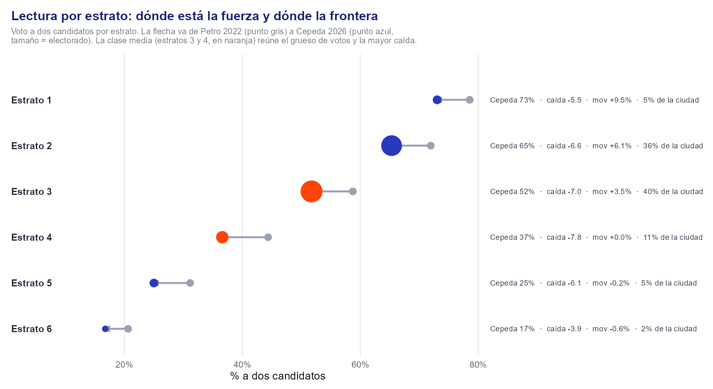

El desempeño en bruto puede confundir: una zona puede caer poco porque pertenece a un estrato que de por sí cae poco, más por composición que por mérito propio. Para una imagen nítida modelé el swing y le resté lo que explican los factores estructurales. Lo que queda —el residuo— es el desempeño neto: cuánto hizo cada zona por encima o por debajo de lo que su composición y su historia predecían.
Controlé por los dos factores que ya sabía dominantes: el estrato —el componente que concentra ~90% de la variación territorial del voto según el PCA previo— y la base de hace dos años (el respaldo de Petro en la primera vuelta de 2022). La especificación es una regresión ponderada por el tamaño electoral de cada UPZ:
Medida 1 — el nivel del voto es estructural. Primero confirmé el supuesto: el estrato explica el 88% del nivel de Cepeda en 2026 (R²=0,879). Cada estrato adicional resta ~14 puntos (p<0,001). Sumando la base de 2022, el nivel queda explicado en 98,6%. Dónde saca votos Cepeda es casi pura estructura, igual que decía el PCA.
| Modelo del nivel (Cep 2026) | R² |
|---|---|
| ~ estrato | 0,879 |
| ~ estrato + base 2022 | 0,986 |


Medida 2 — la caída fue uniforme en todos los estratos. Aquí está el hallazgo clave: el swing (la caída de −6,7 puntos) queda plano frente al estrato y la base. R²=0,006 con estrato y 0,017 con estrato+base, ambos cercanos a cero. La desviación estándar de los residuos (1,76) iguala la del swing crudo: la estructura explica 0% de quién cayó más.
| Modelo del swing | R² | Coef. estrato |
|---|---|---|
| ~ estrato | 0,006 | +0,15 (ns) |
| ~ estrato + base | 0,017 | aj. ≈0 |
Quise saber qué zonas de Bogotá rindieron por encima de lo que su propia composición predecía. La vara es la ciudad misma: Bogotá es un universo aparte, con un electorado distinto al del resto del país, así que medí cada zona contra lo que Bogotá esperaría de ella. Seguí estos pasos:
Usé datos oficiales de la Registraduría: preconteo de primera vuelta, detalle por mesa de segunda vuelta y archivo MMV de 2022. El nivel nacional lo conservo como referencia de contexto en la sección 3.
Para ubicar a Bogotá en el mapa del país: a dos candidatos, la izquierda pasó de Petro 51,6% a Cepeda 49,5% en la nación (−2,0 pts); Bogotá pasó de 60,3% a 53,6% (−7,1 pts), 5 puntos más. En movilización, el país creció +9,9% de votantes y Bogotá +4,0%. Esto sitúa a la ciudad dentro de la corriente nacional. Para juzgar a cada zona uso la vara de Bogotá, porque comparar una UPZ con el promedio de un país que reúne electorados muy distintos mezcla la estructura de la ciudad con su desempeño.
Apliqué la misma vara interna a las 19 localidades. La barra es el índice; al lado van sus residuos: retención neta y movilización neta (lo que cada localidad hizo por encima o por debajo de lo que predicen su estrato y su base de 2022), con estrato y votos. El orden marca quién rindió por encima de lo esperado dentro de Bogotá:

| Localidad | UPZ | Votos 2v | Estr. | % Cep 2v | Ret. neta | Mov. neta | Índice | Desempeño |
|---|---|---|---|---|---|---|---|---|
| Santa Fe | 2 | 34.046 | 2.5 | 68.0% | +3.1 | +2.3 | 1.44 | Destacado |
| Candelaria | 1 | 25.234 | 2.6 | 64.9% | +2.3 | +0.7 | 0.73 | Sobre el promedio |
| Usaquén | 7 | 268.867 | 4.3 | 30.7% | +1.0 | +1.4 | 0.57 | Sobre el promedio |
| Mártires | 2 | 46.381 | 3.0 | 47.9% | -0.4 | +2.6 | 0.53 | Sobre el promedio |
| Chapinero | 4 | 92.220 | 4.6 | 34.2% | +1.3 | +0.9 | 0.50 | Sobre el promedio |
| Usme | 4 | 136.613 | 1.8 | 72.1% | +1.3 | +0.9 | 0.50 | Sobre el promedio |
| Ciudad Bolívar | 7 | 285.330 | 1.7 | 69.8% | +0.4 | +1.7 | 0.48 | Sobre el promedio |
| Barrios Unidos | 3 | 97.278 | 3.5 | 42.0% | +0.5 | +1.2 | 0.34 | Sobre el promedio |
| Teusaquillo | 5 | 89.404 | 3.8 | 48.4% | +3.1 | -1.6 | 0.29 | En el promedio |
| San Cristóbal | 5 | 187.377 | 2.3 | 69.3% | +0.7 | +0.6 | 0.24 | En el promedio |
| Bosa | 5 | 327.952 | 1.9 | 67.9% | +0.8 | +0.2 | 0.16 | En el promedio |
| Suba | 10 | 571.899 | 3.3 | 44.0% | +0.4 | +0.0 | -0.02 | En el promedio |
| Rafael Uribe Uribe | 5 | 175.144 | 2.5 | 63.4% | -0.2 | +0.3 | -0.09 | En el promedio |
| Tunjuelito | 2 | 102.702 | 2.4 | 59.5% | -1.1 | +0.3 | -0.35 | Por debajo |
| Engativá | 7 | 393.055 | 2.8 | 50.4% | -0.4 | -0.5 | -0.40 | Por debajo |
| Fontibon | 5 | 188.765 | 3.2 | 49.5% | -0.4 | -0.6 | -0.44 | Por debajo |
| Puente Aranda | 3 | 97.452 | 3.0 | 46.8% | -1.1 | +0.0 | -0.46 | Por debajo |
| Antonio Nariño | 3 | 98.993 | 2.9 | 50.5% | -1.5 | +0.2 | -0.53 | Por debajo |
| Kennedy | 10 | 804.823 | 2.6 | 54.7% | -1.4 | -1.5 | -1.00 | Rezagado |

Cada UPZ. A la derecha = retuvo voto por encima de lo predicho dentro de Bogotá; arriba = movilizó por encima de lo que predice su estrato. El cuadrante verde reúne a las que rindieron por encima de su estructura en ambas dimensiones.
Cada UPZ con sus indicadores y su desempeño, ordenadas de mayor a menor índice. Ret. neta = puntos de swing por encima de lo que predicen su estrato y su base 2022; Mov. neta = puntos porcentuales de votantes por encima de lo predicho; el índice combina ambos en z. El archivo Desempeno_UPZ_Bogota.csv trae además el swing crudo y el residuo de nivel.

| UPZ | Localidad | Estr. | Votos 2v | % Cep 2v | Ret. neta | Mov. neta | Índice | Desempeño |
|---|---|---|---|---|---|---|---|---|
| Las Nieves | Santa Fe | 2.8 | 20.213 | 62.8% | +4.4 | +1.9 | 1.69 | Destacado |
| Galerias | Teusaquillo | 3.3 | 28.852 | 51.2% | +6.6 | -0.3 | 1.65 | Destacado |
| Ciudad Usme | Usme | 1.7 | 11.582 | 75.6% | +1.6 | +4.3 | 1.58 | Destacado |
| El Refugio | Chapinero | 6.0 | 19.013 | 13.1% | +2.4 | +3.3 | 1.54 | Destacado |
| El Tesoro | Ciudad Bolívar | 1.3 | 26.038 | 74.2% | +1.5 | +3.1 | 1.23 | Destacado |
| Santa Barbara | Usaquén | 5.8 | 35.717 | 12.9% | +1.8 | +2.7 | 1.19 | Destacado |
| Upr Rio Tunjuelo | Ciudad Bolívar | 1.4 | 5.714 | 73.3% | -1.7 | +6.1 | 1.17 | Destacado |
| Chico Lago | Chapinero | 4.8 | 34.224 | 26.9% | +2.0 | +2.3 | 1.14 | Destacado |
| Usaquen | Usaquén | 4.9 | 40.520 | 23.6% | +1.3 | +2.8 | 1.07 | Destacado |
| Lourdes | Santa Fe | 2.0 | 13.833 | 75.6% | +1.3 | +2.8 | 1.06 | Destacado |
| Alfonso Lopez | Usme | 1.0 | 14.570 | 74.4% | +2.4 | +1.6 | 1.02 | Destacado |
| Lucero | Ciudad Bolívar | 1.3 | 58.857 | 72.5% | +0.2 | +3.5 | 0.97 | Destacado |
| Los Alcazares | Barrios Unidos | 3.3 | 28.785 | 44.1% | +1.3 | +2.3 | 0.92 | Destacado |
| Country Club | Usaquén | 5.5 | 34.249 | 19.3% | +1.9 | +1.7 | 0.92 | Destacado |
| Jerusalem | Ciudad Bolívar | 1.0 | 27.343 | 71.6% | +1.4 | +1.8 | 0.81 | Destacado |
| La Sabana | Mártires | 3.0 | 29.839 | 49.2% | -0.3 | +3.3 | 0.76 | Sobre el promedio |
| La Candelaria | Candelaria | 2.6 | 25.234 | 64.9% | +2.3 | +0.7 | 0.73 | Sobre el promedio |
| Verbenal | Usaquén | 2.9 | 46.213 | 51.9% | +1.6 | +1.0 | 0.63 | Sobre el promedio |
| La Alhambra | Suba | 5.0 | 27.489 | 20.9% | +1.3 | +1.2 | 0.59 | Sobre el promedio |
| Tibabuyes | Suba | 2.2 | 113.816 | 61.0% | +2.1 | +0.3 | 0.56 | Sobre el promedio |
| Engativa | Engativá | 2.0 | 46.073 | 58.1% | +0.6 | +1.6 | 0.53 | Sobre el promedio |
| Fontibon San Pablo | Fontibon | 2.5 | 13.643 | 63.8% | +2.4 | -0.1 | 0.51 | Sobre el promedio |
| Los Libertadores | San Cristóbal | 1.7 | 29.283 | 73.6% | +1.3 | +0.9 | 0.51 | Sobre el promedio |
| Diana Turbay | Rafael Uribe Uribe | 1.9 | 26.705 | 70.6% | +1.3 | +0.8 | 0.48 | Sobre el promedio |
| Ismael Perdomo | Ciudad Bolívar | 1.8 | 73.076 | 68.9% | +1.1 | +0.8 | 0.42 | Sobre el promedio |
| El Rincon | Suba | 2.3 | 115.003 | 58.3% | +1.5 | +0.2 | 0.37 | Sobre el promedio |
| Comuneros | Usme | 1.6 | 43.824 | 72.3% | +1.2 | +0.5 | 0.35 | Sobre el promedio |
| La Gloria | San Cristóbal | 2.0 | 47.112 | 73.1% | +1.2 | +0.5 | 0.35 | Sobre el promedio |
| Bosa Central | Bosa | 2.0 | 155.595 | 68.8% | +0.8 | +0.9 | 0.35 | Sobre el promedio |
| Los Andes | Barrios Unidos | 4.0 | 28.691 | 36.0% | +0.6 | +1.0 | 0.34 | Sobre el promedio |
| San Cristobal Norte | Usaquén | 3.0 | 16.863 | 49.9% | +1.4 | +0.2 | 0.34 | Sobre el promedio |
| Gran Yomasa | Usme | 2.0 | 66.637 | 70.8% | +1.0 | +0.5 | 0.29 | En el promedio |
| La Uribe | Usaquén | 3.7 | 29.687 | 40.2% | +0.1 | +1.2 | 0.24 | En el promedio |
| Tunjuelito | Tunjuelito | 2.2 | 32.730 | 60.6% | -0.6 | +1.8 | 0.22 | En el promedio |
| Fontibon | Fontibon | 3.0 | 88.062 | 54.0% | +0.8 | +0.4 | 0.19 | En el promedio |
| Sosiego | San Cristóbal | 2.7 | 37.355 | 64.5% | -0.4 | +1.5 | 0.19 | En el promedio |
| Tintal Sur | Bosa | 1.8 | 33.365 | 71.5% | +2.5 | -1.3 | 0.17 | En el promedio |
| De Julio | San Cristóbal | 2.6 | 49.963 | 65.9% | +0.5 | +0.5 | 0.14 | En el promedio |
| Puente Aranda | Puente Aranda | 3.0 | 7.427 | 50.2% | -0.8 | +1.7 | 0.14 | En el promedio |
| Marco Fidel Suarez | Rafael Uribe Uribe | 2.5 | 32.967 | 67.4% | -0.0 | +0.9 | 0.14 | En el promedio |
| Santa Isabel | Mártires | 3.0 | 16.542 | 45.4% | -0.4 | +1.2 | 0.12 | En el promedio |
| Chapinero | Chapinero | 3.7 | 26.282 | 51.4% | +1.9 | -1.0 | 0.11 | En el promedio |
| Bosa Occidental | Bosa | 1.9 | 72.007 | 65.8% | +0.7 | -0.1 | 0.04 | En el promedio |
| San Blas | San Cristóbal | 1.9 | 23.664 | 71.6% | +1.1 | -0.6 | 0.01 | En el promedio |
| San Francisco | Ciudad Bolívar | 2.0 | 49.878 | 68.4% | -0.3 | +0.7 | -0.01 | En el promedio |
| Americas | Kennedy | 2.7 | 75.032 | 49.2% | +1.7 | -1.3 | -0.02 | En el promedio |
| El Porvenir | Bosa | 1.6 | 43.845 | 69.3% | +1.0 | -0.6 | -0.02 | En el promedio |
| La Esmeralda | Teusaquillo | 4.3 | 16.979 | 35.6% | +1.3 | -0.9 | -0.03 | En el promedio |
| Doce De Octubre | Barrios Unidos | 3.3 | 39.802 | 44.7% | -0.3 | +0.5 | -0.07 | En el promedio |
| Quiroga | Rafael Uribe Uribe | 3.0 | 58.201 | 58.7% | -0.6 | +0.8 | -0.10 | En el promedio |
| Los Cedros | Usaquén | 4.3 | 65.618 | 26.5% | -0.2 | +0.3 | -0.10 | En el promedio |
| Minuto De Dios | Engativá | 2.8 | 61.483 | 51.5% | +0.6 | -0.6 | -0.15 | En el promedio |
| San Rafael | Puente Aranda | 3.0 | 36.242 | 47.0% | -0.4 | +0.4 | -0.16 | En el promedio |
| Calandaima | Kennedy | 2.4 | 36.266 | 60.9% | +0.8 | -0.9 | -0.19 | En el promedio |
| Las Ferias | Engativá | 3.0 | 55.044 | 49.4% | +0.5 | -0.7 | -0.20 | En el promedio |
| Arborizadora | Ciudad Bolívar | 2.6 | 44.424 | 65.2% | -0.4 | +0.1 | -0.23 | En el promedio |
| Niza | Suba | 4.6 | 62.742 | 29.6% | -0.7 | +0.2 | -0.27 | En el promedio |
| La Floresta | Suba | 3.7 | 22.672 | 28.0% | -0.5 | -0.0 | -0.28 | En el promedio |
| Teusaquillo | Teusaquillo | 3.9 | 18.717 | 56.6% | +1.9 | -2.4 | -0.30 | Por debajo |
| El Prado | Suba | 3.6 | 36.886 | 30.3% | -0.8 | +0.2 | -0.31 | Por debajo |
| Gran Britalia | Kennedy | 2.1 | 46.964 | 62.3% | -0.2 | -0.4 | -0.32 | Por debajo |
| Suba | Suba | 3.0 | 72.057 | 50.8% | -0.6 | -0.0 | -0.32 | Por debajo |
| San Jose De Bavaria | Suba | 3.9 | 36.978 | 34.4% | -0.0 | -0.8 | -0.38 | Por debajo |
| Apogeo | Bosa | 2.4 | 23.140 | 60.6% | -1.0 | +0.1 | -0.40 | Por debajo |
| Santa Cecilia | Engativá | 3.0 | 22.799 | 44.1% | -0.3 | -0.7 | -0.40 | Por debajo |
| Restrepo | Antonio Nariño | 3.0 | 49.046 | 50.4% | -1.6 | +0.6 | -0.41 | Por debajo |
| Marruecos | Rafael Uribe Uribe | 2.0 | 33.110 | 66.2% | -0.6 | -0.4 | -0.43 | Por debajo |
| Boyaca Real | Engativá | 3.0 | 81.193 | 49.0% | -0.7 | -0.4 | -0.46 | Por debajo |
| Parque Simon Bolivar can | Teusaquillo | 4.0 | 12.812 | 49.7% | +2.5 | -3.5 | -0.48 | Por debajo |
| Castilla | Kennedy | 2.7 | 88.864 | 50.4% | +0.6 | -1.9 | -0.54 | Por debajo |
| Bavaria | Kennedy | 3.5 | 66.208 | 49.6% | +0.6 | -1.9 | -0.54 | Por debajo |
| Muzu | Antonio Nariño | 3.0 | 33.774 | 49.9% | -1.3 | -0.1 | -0.56 | Por debajo |
| San Jose | Rafael Uribe Uribe | 3.0 | 24.161 | 57.3% | -0.1 | -1.3 | -0.57 | Por debajo |
| Venecia | Tunjuelito | 2.6 | 69.972 | 59.0% | -1.3 | -0.4 | -0.62 | Por debajo |
| Garces Navas | Engativá | 2.9 | 72.060 | 51.6% | -1.1 | -0.7 | -0.64 | Por debajo |
| Modelia | Fontibon | 4.0 | 22.562 | 34.2% | -1.4 | -0.3 | -0.64 | Por debajo |
| Kennedy Central | Kennedy | 3.0 | 115.749 | 55.1% | -1.1 | -0.8 | -0.67 | Por debajo |
| Casa Blanca Suba | Suba | 4.3 | 58.700 | 25.7% | -1.3 | -0.7 | -0.72 | Por debajo |
| Britalia | Suba | 3.8 | 25.556 | 34.4% | -1.3 | -0.7 | -0.74 | Por debajo |
| Ciudad Montes | Puente Aranda | 3.0 | 53.783 | 46.1% | -1.7 | -0.5 | -0.75 | Por debajo |
| Quinta Paredes | Teusaquillo | 3.8 | 12.044 | 45.5% | 0.0 | -2.2 | -0.80 | Por debajo |
| Ciudad Jardin | Antonio Nariño | 2.7 | 16.173 | 52.0% | -2.0 | -0.4 | -0.85 | Rezagado |
| Zona Franca | Fontibon | 2.0 | 23.466 | 59.4% | -1.1 | -1.9 | -1.03 | Rezagado |
| Carvajal | Kennedy | 2.8 | 83.956 | 53.2% | -2.0 | -1.6 | -1.20 | Rezagado |
| Bolivia | Engativá | 3.0 | 54.403 | 46.6% | -2.0 | -1.8 | -1.25 | Rezagado |
| Timiza | Kennedy | 2.6 | 111.248 | 56.5% | -2.7 | -1.9 | -1.46 | Rezagado |
| Patio Bonito | Kennedy | 2.0 | 125.821 | 59.2% | -3.5 | -1.3 | -1.52 | Rezagado |
| Granjas De Techo | Fontibon | 4.0 | 41.032 | 37.9% | -3.0 | -2.2 | -1.64 | Rezagado |
| Pardo Rubio | Chapinero | 3.6 | 12.701 | 49.8% | -3.3 | -3.0 | -1.97 | Rezagado |
| Tintal Norte | Kennedy | 2.5 | 54.715 | 52.8% | -6.1 | -3.8 | -3.00 | Rezagado |
El marco de la sección 1 explica por qué uso residuos. La estructura (estrato + base 2022) explica el nivel del voto casi por completo (R²=0,986) y tres cuartas partes de la movilización (R²=0,75), y deja el swing casi sin patrón (R²=0,02). Por eso la retención neta de cada zona es, sobre todo, cuánto se separó del promedio de la ciudad, y la movilización neta sí descuenta el efecto del estrato.
Los residuos son pequeños: la mayoría de las zonas se mueve dentro de ±2 puntos de lo predicho. Los casos que de verdad se salen del patrón son pocos —Galerías y Las Nieves por arriba, Tintal Norte y el norte de Kennedy por abajo—, y son los que merecen mirada de terreno.

El estrato fija el nivel del voto (sección 1), así que vale la pena leer la ciudad por estrato para saber dónde apoyarse y dónde crecer. La caída fue pareja en puntos (entre −5 y −8), y la movilización sigue de cerca al estrato: el sur popular saca gente y la parte alta creció poco.

| Estrato | % Cepeda 2v | Caída vs 2022 | Movilización | Votos 2v | % ciudad | Lectura |
|---|---|---|---|---|---|---|
| 1 — bajo | 73,0% | −5,5 | +9,5% | 200.461 | 5,2% | Bastión: la mayor movilización de la ciudad |
| 2 — bajo | 65,3% | −6,6 | +6,1% | 1.368.399 | 35,7% | Base amplia: el bloque afín más grande |
| 3 — medio | 51,7% | −7,0 | +3,5% | 1.541.277 | 40,2% | La frontera: el mayor electorado, voto dividido |
| 4 — medio-alto | 36,6% | −7,8 | 0,0% | 440.711 | 11,5% | La frontera: aquí está la mayor caída |
| 5 — alto | 25,0% | −6,1 | −0,2% | 191.703 | 5,0% | Adverso y pequeño |
| 6 — alto | 16,8% | −3,9 | −0,6% | 93.005 | 2,4% | Adverso y pequeño |
La lectura por estrato y la de zonas (secciones 4 y 6) apuntan a un mismo mapa de acción, con dos horizontes: el trabajo inmediato y la preparación de las elecciones locales de 2027 (alcaldía, concejo y ediles).
Método: por UPZ (90 con ≥4 puestos; 905 puestos casados 2022/2026) y agregado a 19 localidades. Desempeño = residuos del modelo ponderado por votos: swing ~ estrato + base 2022 (retención neta) y movilización ~ estrato + base 2022 (movilización neta), ajustados dentro de Bogotá. Índice compuesto = z(retención neta) + z(movilización neta); cinco niveles por tramos del índice. Se excluyen los puestos no residenciales (puesto censo de Corferias y cárceles, zonas ≥90; 5 puestos, 1,3% de votos). Referencia nacional (contexto): país swing −2,0 / mov +9,9%; Bogotá −7,1 / +4,0%. Listados completos: Desempeno_UPZ_Bogota.csv (90 UPZ), Desempeno_Localidades_Bogota.csv (19 localidades), Lectura_Estratos_Bogota.csv (estratos 1–6). Datos: Registraduría (preconteo, detalle por mesa, MMV 2022); estrato del puesto por catastro. Daniel Santiago Roldán (@RoldnSantiago).